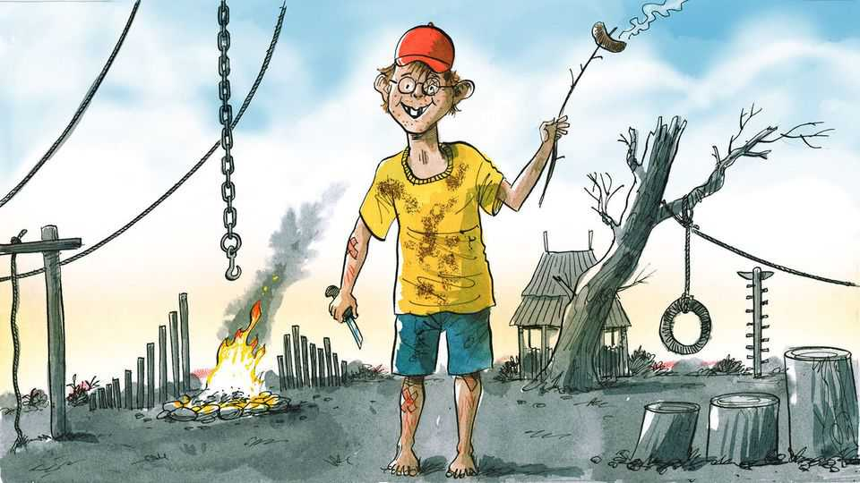

In praise of Scandinavia’s risky and dirty playgrounds
Kids stand to gain from a few bumps, bruises and mud-splatters
July 16th 2026

A visitor to the playground at Valbyparken, a green expanse in Copenhagen, is in for three surprises. The first is that the sprawling public children’s park is built on what was once a rubbish tip for the Danish capital. The second is the free coffee on offer for harried parents. But perhaps the most unexpected is the eagerness of the playground’s staff to hand out knives to children. Or axes, if they prefer. Or even, for tots bored with mere weaponry, some fire-starting equipment. Off you go, kids, and do be careful (oh and parents please keep an eye on them). Sprogs of an age that in most countries would barely be allowed onto a swing unattended scamper away to whittle sticks and soon imagine themselves carving their own magic wand, or the oar of a Viking longship.
The knife-dispensing strategy may appear to some as an oversight that keeps the local hospital bustling with injured kids in summer. On the contrary. Injecting a dose of risk into children’s free-ranging fun is a feature, not a bug. The nature-based playground offers a litany of ways for children to get bruised, bumped, scratched and dirty. There are trees to climb, brambly branches to rearrange, tricycles to ride (often into each other), a play pond to stumble into, then trails to get lost in far from nosy parents. Adult chaperones may fret about lurking hazards, but their peace of mind is secondary. “It’s children who need to be aware of every step they take,” says Helle Nebelong, a former Copenhagen city official who designed the place at the turn of the century. “They must take responsibility for their own safety.” A cadre of young staff are there to catalyse play rather than stymie it.
Playgrounds the world over have done their utmost to eliminate risk. Why expose children to injuries, even minor ones, if they can be avoided? From Tokyo to Toronto, childhood play has thus become enveloped in well-meaning bubble-wrap. Any adult who has visited a play area they frequented as a child can see how anything that might cause so much as a grazed knee or a soiled skirt has been done away with. Asphalt and dirt have been replaced by vast expanses of rubberised carpets. Tree branches that might tempt intrepid youths have been cut down. In their stead, standardised equipment picked out of a catalogue—a few tame slides, some swings and a climbing frame—are erected. This cookie-cutter approach delights fretful municipal officials fearing lawsuits and criticism from health-and-safety bureaucrats. Alas, it bores kids to tears. No wonder they beg for screens instead.
Mariana Brussoni, a childhood expert at the University of British Columbia, decries “an epidemic of anxiety-based parenting” for the trend towards duller and safer play. In past generations families with a dozen kids had little choice but to let them roam free. These days smaller broods are the norm, and so more adult attention has been bestowed on fewer kids. This has led to an outbreak of “parenting” whereby children need to be cultivated rather than left to their own devices (no, not smartphones). In well-off circles, giving sprogs time and space to just be themselves or mess about with friends—ie play—is seen as an indulgence. Instead, they must be shuttled from school to ballet classes to fencing, before homework. What time is allocated to unstructured fun is mostly spent in playgrounds under watchful grown-ups’ eyes.
This avoids a few scratches and bumps along the way—but at what cost? “If you protect children too much, you rob them of experiences that will make them safer and happier,” says Ellen Beate Hansen Sandseter at Queen Maud University College in Trondheim, Norway. Kids are well equipped to know what daring swing or lunge would thrill them most, and to learn from their mistakes. Playground safety should be about the sturdiness of the equipment, not the way it comes to be used. As for a little dirt, what harm can it do? In fact, recent research from Finland shows wallowing in soil has wondrous effects on small immune systems.
Giving children this benefit of the doubt still prevails in Scandinavia. There, playgrounds are seen as a practice arena in which kids get “the tickle in their stomach” from taking risks, as Prof Sandseter puts it—whether it be riding a bike a bit too fast, climbing up to the next branch or playing with knives. Sometimes the approach boggles foreign minds. “Construction playgrounds” sprang up in Denmark after the second world war, with open-air areas filled with discarded junk that children could shape into multi-storey houses, with saws or nails or whatever they saw fit.
Two traditions anchor a culture of Nordic risky play. The first is the ancestral habit of playing in nature—by its essence a place of untamed risks. But more recent social norms have a role, too. Stay-at-home parents are rare, leaving fewer mothers to interfere with kid-only time. It is frowned upon to ferry even the youngest to school if they can walk or cycle there themselves. Across Europe, but unlike America, there is no culture of litigation in case risky play results in a broken arm. Free health care means a broken bone is a nuisance, not a financial burden.
Keen to explore these Scandinavian ways, The Economist secured the services of four playground afficionados—your columnist’s three boys and their cousin, aged eight to 12. Left to their own wits in Valbyparken while their father disappeared to interview Ms Nebelong, the knife-wielding gang soon secured equipment to cook flatbreads on an open-flame pit. Later in a construction playground across town they deftly navigated rusty nails and discarded furniture in search of new adventures (some sawing required). Might injuries have resulted, a pinched finger or a sprained ankle? Possibly. But the day offered an opportunity to learn about the real world, too, which these youngsters will one day need to navigate. “It beats the old swing, swing, slide, swing, swing playground,” opined the eldest among them. It might even beat a screen.■
Subscribers to The Economist can sign up to our Opinion newsletter, which brings together the best of our leaders, columns, guest essays and reader correspondence.